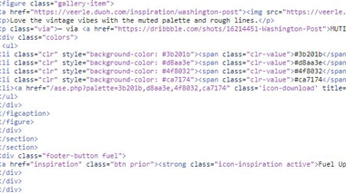

Code
Veerle makes good use of section elements and creating cards for the site. Each card is created with a header, a paragraph for the date, an image, a paragraph used as a short description, and a footer with a link. CSS is reset using Normalize. The site also utilizes jQuery and json. Fonts for the site are imported via Typekit. One section element that does not seem to be present however is the navigation element, which could improve the markup for the site.
User Interface - UI
The UI on Veerle's site is clean and logical. The site makes good use of cards and the design is consistent across the site. Utilizing rows could help improve the look of the site, especially on the inspiration page is many cards have different starting points due to card height.
User Experience - UX
There are a lot of strong UX features on Veerle's site. Most content has hover states to let you know you can do something with the content. One weak point however is the email newsletter sign-up which does not provide any visual feedback regarding validation of input or the state of the submit button. Adding both of these would improve the UX on a site that is strong in almost every other aspect.
Summary
Veerel's site offers a lot of great information and inspiration, both in regards to the content on the site and the way that the site is built. The color scheme of the site matches the content well and the UX for the site is very approachable. The areas of the site that I thought could use some improvement are small and ultimately take away very little from the UI and UX.